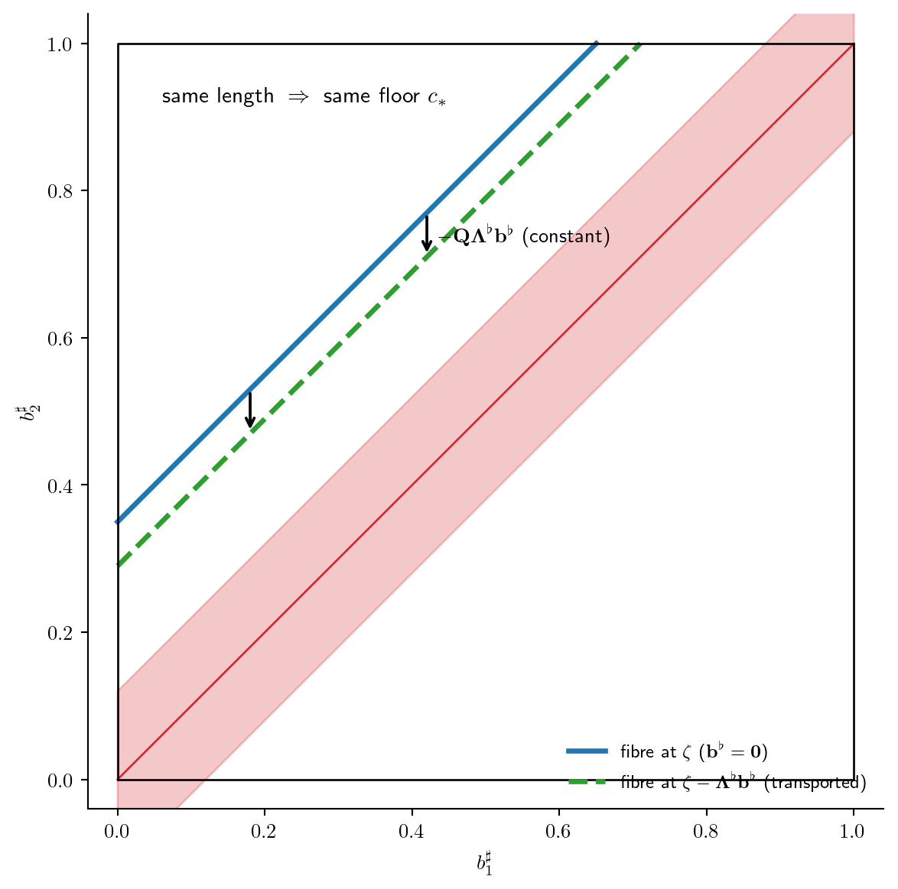

연구 ▷ HST ▷ robust core를 그림으로 — \(\delta\)-분리·tie-tube·transport
Author
소미
Published
June 12, 2026
hst_AAA §5.2의 Lemma 8(\(C_0\) is a small set) 증명에는 robust core라는 장치가 나온다. 정의만 보면 추상적이지만, 그림으로 보면 하는 일이 명확하다 — 이 글은 그 기계를 구체 예제 4장의 그림으로 따라간다: ① non-fall 예금이 walker의 길(branch)을 흔드는 문제, ② fall 하나가 만드는 margin, ③ \(\delta\)-분리와 tie-tube 도려내기, ④ transport 평행이동. 수치 버전의 단계별 해설은 유진의 \(K_3\) 글(2026-06-05)에 있고, 여기서는 눈으로 보는 쪽을 맡는다.
무대를 한 줄로 요약하면 이렇다. 한 라운드는 fall(눈이 \(\boldsymbol{\mu}_0\)-추첨된 노드에 \(b^{\sharp}\sim\mathrm{Unif}(0,b)\)만큼 떨어짐) 하나와 non-fall(walker가 낮은 곳으로 흐르며 \(b^{\flat}\)씩 떨굼) 여럿으로 구성된다. small set 증명은 “\(nL\)라운드 뒤 높이차가 표적 \(\mathsf{U}\)에, walker가 \(v_n\)에 도달”하는 사건의 확률 바닥 \(\eta>0\)를 깔아야 하는데, 퍼짐을 만드는 주인공은 fall이고 non-fall은 잡음이다. 문제는 이 잡음이 단순한 덧셈 잡음이 아니라는 것 — 여기서 첫 그림이 나온다.
1. 문제: 작은 \(b^{\flat}\)가 길을 바꾼다
경로그래프 \(v_1\!-\!v_2\!-\!v_3\)에서 fall 직후 높이가 \(\mathbf{h}=(1,\,0.99,\,0.999)\)라 하자. walker는 \(v_1\)에서 \(v_2\)로 흐르며 \(b^{\flat}\)를 떨군다. 이 \(b^{\flat}\) 하나가 \(v_2\)의 높이를 \(0.99+b^{\flat}\)로 만들고, 그 값이 이웃(\(0.999\), \(1\))을 넘느냐에 따라 그 다음 갈 수 있는 길의 집합이 통째로 바뀐다. 아래 그림은 \(b^{\flat}\)의 세 구간이 만드는 세 가지 미래다.
같은 fall, 다른 branch — non-fall 예금 b♭ 하나가 높이 비교 0.99+b♭ ≶ 0.999, 1을 뒤집어 walker의 길이 바뀐다. (세로축 모식도: 간격 과장)
(a)에서는 \(v_2\)가 양 이웃보다 낮아 내려갈 곳이 없고(block), (b)에서는 \(v_3\)쪽 길 하나가 열리고, (c)에서는 양쪽 다 열려 walker가 동전을 던진다. 즉 \(b^{\flat}\)가 비교값을 동점(\(0.999\), \(1\)) 너머로 밀면 branch가 바뀐다 — 잡음이 경로 자체를 흔드는 셈이다. 이 높이 배열이 위험한 이유는 간격이 \(0.009\), \(0.001\)로 동점에 너무 가깝기 때문이다. robust core의 아이디어는 정확히 이것의 역이다: 동점 근처를 통째로 버리고, 비교가 넉넉히 벌어진 fall들만 남긴다.
2. margin, \(\delta\)-분리, tie-tube — 그리고 transport
margin 하나부터. 출발 높이 \((0,1,1)\)에서 \(v_1\)에 fall \(b^{\sharp}\sim\mathrm{Unif}(0,1)\)이 떨어진다고 하자(\(b=1\)). 관련 비교는 \(v_1\) 대 \(v_2\) 하나이고, 그 비교의 동점까지의 거리를 margin이라 부른다:
여기서 \(b^{\sharp}=1\)이면 margin \(=0\)(정확히 동점), \(b^{\sharp}=0.5\)면 margin \(=0.5\)다. \(\delta\)-분리의 정의는 이 margin이 미리 고정한 문턱 \(\delta\) 이상이라는 것이고, robust core는 그런 \(b^{\sharp}\)들의 집합이다. 이 1차원 예제에서는 구간 하나로 답이 나온다 — robust core \(=[0,\,1-\delta]\), 버려지는 tie-tube \(=(1-\delta,\,1]\).
출발 (0,1,1), v₁에 b♯∼Unif(0,1): margin = 1−b♯. margin ≥ δ인 구간 0 ≤ b♯ ≤ 1−δ가 robust core(파랑), 동점 b♯=1 둘레의 가는 꼬리가 tie-tube(빨강). δ 하나당 점 하나가 아니라 구간 전체가 살아남는다.
\(\delta\)는 사건마다 다시 재는 값이 아니라 증명 첫머리에 한 번 고정하는 상수이고, 살아남는 쪽은 점이 아니라 구간 전체라서 양의 측도가 남는다 — 이것이 밀도 바닥 \(c_*>0\)의 원천이다.
2차원으로 올리면 tie-tube가 보인다. 노드가 둘(\(n=2\), \(b=1\))이고 fall이 두 번(\(b^{\sharp}_1\)은 \(v_1\)에, \(b^{\sharp}_2\)는 \(v_2\)에) 떨어진다고 하자. fall 공간은 정사각형 \([0,1]^2\)이고, 최종 높이차를 만드는 fall map은
이다. 표적 높이차 \(\zeta\)를 하나 정하면 그것을 실현하는 fall들의 집합(fibre)은 직선 \(b^{\sharp}_2-b^{\sharp}_1=\zeta\)이고, 동점(\(\zeta=0\))은 대각선이다. \(\delta\)-분리는 “대각선 둘레 폭 \(2\delta\) 띠(tie-tube)를 피하라”는 조건이 되고, chamber \(\mathsf{U}\)는 동점에서 \(\kappa_{\mathsf{U}}\) 이상 떨어진 표적 구간이다.
n=2 fall 공간 = 단위 정사각형: fibre는 기울기 1의 직선 b₂♯−b₁♯=ζ. 동점 ζ=0(대각선) 둘레의 tie-tube(빨강 띠)를 도려내고, chamber 𝖴(동점에서 κ_𝖴 이상 떨어진 표적 구간)로 가는 fibre 다발(파랑)만 남긴다.
빨간 띠가 버리는 곳, 파란 다발이 쓰는 곳이다. chamber \(\mathsf{U}\)를 동점에서 \(\kappa_{\mathsf{U}}\)만큼 띄워 잡았기 때문에 파란 fibre들은 애초에 빨간 띠를 지나지 않는다. fibre는 직선(1차원)이지만 양의 길이를 갖고, \(\zeta\)가 \(\mathsf{U}\) 위를 움직여도 그 길이가 일정 수준 아래로 떨어지지 않는다 — 이 “fibre 길이의 바닥”이 일반 증명에서 \(\mathcal{H}^{nL-d}\) 바닥 \(m_*\)에 해당한다.
Tip왜 2D 르벡이 아니라 \(\mathcal{H}^1\)인가?
파란 fibre 선은 \([0,1]^2\) 안에 놓인 1차원 부분집합이다. 2차원 르벡 측도로 재면 면적이 0 — “이 직선 위에서 robust core가 얼마를 차지하나?”를 2D 르벡으로는 물을 수 없다.
바깥 적분은 \(\zeta\)에 대한 1D 르벡, 안쪽 적분은 각 fibre 위에서의 1차원 하우스도르프 측도 \(\mathcal{H}^1\) (= 선분 길이 = 1D 르벡을 fibre 방향으로 제한한 것)이다. 이 분해를 통해 “fibre 위에서 robust core가 차지하는 선분 길이”가 \(\varepsilon_{\flat}\)에 무관하게 \(m_* > 0\) 아래로 떨어지지 않음을 보일 수 있다.
\(\mathcal{H}^{1}\)이 낯설어 보이는 이유는 대개 하우스도르프를 분수 차원(프랙탈 집합의 2.3차원 측도 같은 것)의 맥락에서 먼저 배우기 때문이다. 여기서 쓰이는 건 정수 차원 버전 — 1차원 아핀 부분다양체에 대해 $^1 = $ 호의 길이이고, 실질적으로는 fibre를 매개변수로 쓰는 1D 르벡 적분과 동일하다.
마지막 조각이 transport다. 현실에는 non-fall 잡음 \(b^{\flat}\)가 있어서, 같은 표적 \(\mathbf{u}\)에 도달하려면 fall이 맞춰야 하는 값이 \(\zeta\)에서 \(\zeta-\Lambda^{\flat}b^{\flat}\)로 밀린다. 그러면 fibre가 잡음마다 달라지는데, 바닥도 같이 흔들리는가? 흔들리지 않는다 — \(b^{\flat}\)를 하나 고정하면 그 이동량은 상수이고, 두 fibre는 서로의 평행이동 복사본이라 길이가 같기 때문이다.
Code
import matplotlib.pyplot as pltimport numpy as npplt.rcParams["text.usetex"] =Trueplt.rcParams["text.latex.preamble"] =r"\usepackage{amsmath,amssymb}"delta =0.12z0 =0.35# 원래 표적 (b♭=0)shift =0.06# Λ♭b♭ (≤ δ/2 로 묶인 잡음, 그림용)z1 = z0 - shiftfig, ax = plt.subplots(figsize=(6.2, 6.2))ax.set_box_aspect(1)xx = np.linspace(0, 1, 200)ax.fill_between(xx, xx - delta, xx + delta, color="tab:red", alpha=0.25)ax.plot(xx, xx, color="tab:red", lw=1)# 원래 fibre, 이송된 fibrexs0 = np.linspace(0, 1- z0, 50)ax.plot(xs0, xs0 + z0, color="tab:blue", lw=2.5, label=r"fibre at $\zeta$($\mathbf{b}^{\flat}=\mathbf{0}$)")xs1 = np.linspace(0, 1- z1, 50)ax.plot(xs1, xs1 + z1, color="tab:green", lw=2.5, ls="--", label=r"fibre at $\zeta-\boldsymbol{\Lambda}^{\flat}\mathbf{b}^{\flat}$(transported)")# 평행이동 화살표 (수직 방향 -shift)for xa in [0.18, 0.42]: ax.annotate("", xy=(xa, xa + z1), xytext=(xa, xa + z0), arrowprops=dict(arrowstyle="->", lw=1.4, color="black"))ax.text(0.435, 0.42+ z0 - shift /2, r"$-\mathbf{Q}\boldsymbol{\Lambda}^{\flat}\mathbf{b}^{\flat}$(constant)", fontsize=10, va="center")ax.text(0.06, 0.92, r"same length $\;\Rightarrow\;$ same floor $c_*$", fontsize=11)ax.plot([0, 1, 1, 0, 0], [0, 0, 1, 1, 0], color="black", lw=1)ax.set_xlabel(r"$b^{\sharp}_1$")ax.set_ylabel(r"$b^{\sharp}_2$")ax.set_xlim(-0.04, 1.04)ax.set_ylim(-0.04, 1.04)ax.legend(loc="lower right", fontsize=9, frameon=False)for s in ["top", "right"]: ax.spines[s].set_visible(False)plt.tight_layout()plt.show()

transport: b♭를 고정하면 fibre(ζ)와 fibre(ζ−Λ♭b♭)는 상수벡터만큼의 평행이동 — 길이(측도)가 보존된다. 이동폭이 δ/4보다 작게 ε♭을 묶어두므로 tie-tube를 넘지 못하고 branch도 그대로다.
transport는 확률(결합적분)을 계산할 때 \(b^{\flat}\)-조각마다 \(b^{\sharp}\)-적분을 변수치환하는 장부 정리일 뿐이다 — \(\iint f(x+y)\,dx\,dy\)에서 \(y\)를 고정하고 \(u=x+y\)로 치환하는 것과 같은 종류의 일이고, 치환에 인과는 필요 없다. 이 치환이 깨끗하게 작동하려면 이동된 fibre가 (i) 정사각형 밖으로 나가지 않고, (ii) branch가 바뀌지 않아야 하는데, 둘 다 잡음 예산을 \(\varepsilon_{\flat}\leq\delta/(4\Gamma)\)로 묶어 이동폭이 \(\delta\)-margin을 넘지 못하게 해 보장한다. 그림에서 초록 fibre가 빨간 띠에 닿지 않는 것이 그 조건의 시각화다.
네 장을 한 줄로 묶으면 — 잡음 \(b^{\flat}\)는 동점 근처에서만 위험하다(그림 1). 그래서 동점 둘레 \(\delta\)-띠를 도려내고 margin \(\geq\delta\)인 fall들만 남기면(그림 2·3), 남은 fibre는 잡음에 평행이동으로만 반응해 바닥이 잡음과 무관해진다(그림 4). 이 잡음-무관 바닥 \(c_*\)가 이산 바닥(\(\mu_{\min}^{nL}q_{\min}^{D}(\varepsilon_{\flat}/b)^{nLT_{\max}}\))과 곱해져 small set 상수 \(\eta\)가 된다.
향후 실험으로 남겨두는 것: (1) \(n=3\) 경로그래프에서 fall 공간 \([0,1]^3\)의 fibre(평면)와 tie-tube를 3D로 그려보기, (2) 실제 AAA 시뮬 궤적에서 margin의 경험분포를 찍어 tie-tube에 머무는 시간 비율 재기.